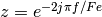
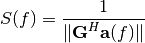
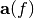
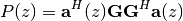
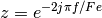

This function estimate the frequency components based on the ESPRIT algorithm [ROY89]
The frequencies are related to the roots as . See [STO97] section 4.7 for more information about the implementation.
| Parameters: |
|
|---|---|
| Returns: | ndarray ndarray containing the L frequencies |
>>> import numpy as np
>>> import spectral_analysis.spectral_analysis as sa
>>> Fe=500
>>> t=1.*np.arange(100)/Fe
>>> x=np.exp(2j*np.pi*55.2*t)
>>> f=sa.Esprit(x,1,None,Fe)
>>> print(f)
This function compute the MUSIC pseudospectrum. The pseudo spectrum is defined as

where corresponds to the noise subspace and  is the steering vector. The peek locations give the frequencies of the signal.
| Parameters: |
|
|---|---|
| Returns: | ndarray |
>>> from pylab import *
>>> import numpy as np
>>> import spectral_analysis.spectral_analysis as sa
>>> Fe=500
>>> t=1.*np.arange(100)/Fe
>>> x=np.exp(2j*np.pi*55.2*t)
>>> f,P=sa.pseudospectrum_MUSIC(x,1,100,Fe,None)
>>> plot(f,P)
>>> show()
This function estimate the frequency components based on the roots MUSIC algorithm [BAR83] . The roots Music algorithm find the roots of the following polynomial

The frequencies are related to the roots as

| Parameters: |
|
|---|---|
| Returns: | ndarray containing the L frequencies |
>>> import numpy as np
>>> import spectral_analysis.spectral_analysis as sa
>>> Fe=500
>>> t=1.*np.arange(100)/Fe
>>> x=np.exp(2j*np.pi*55.2*t)
>>> f=sa.root_MUSIC(x,1,None,Fe)
>>> print(f)
| [STO97] | Stoica, Petre, and Randolph L. Moses. Introduction to spectral analysis. Vol. 1. Upper Saddle River, NJ: Prentice hall, 1997. |
| [ROY89] | Roy, Richard, and Thomas Kailath. “ESPRIT-estimation of signal parameters via rotational invariance techniques.” Acoustics, Speech and Signal Processing, IEEE Transactions on 37.7 (1989): 984-995. |
| [BAR83] | Barabell, Arthur. “Improving the resolution performance of eigenstructure-based direction-finding algorithms.” Acoustics, Speech, and Signal Processing, IEEE International Conference on ICASSP‘83.. Vol. 8. IEEE, 1983. |